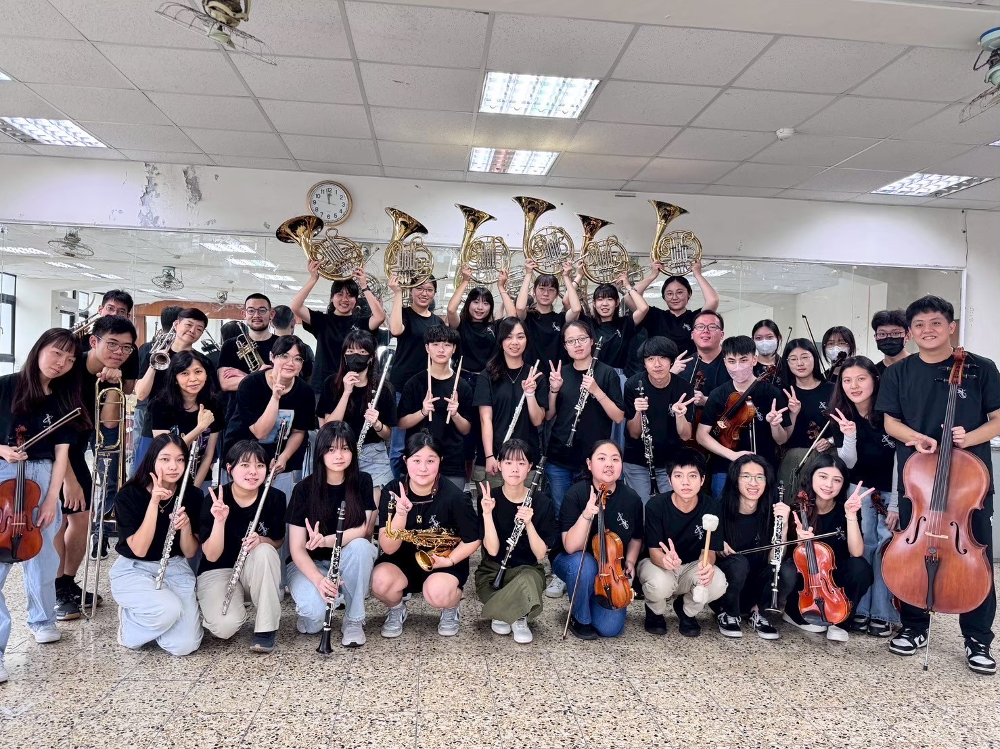
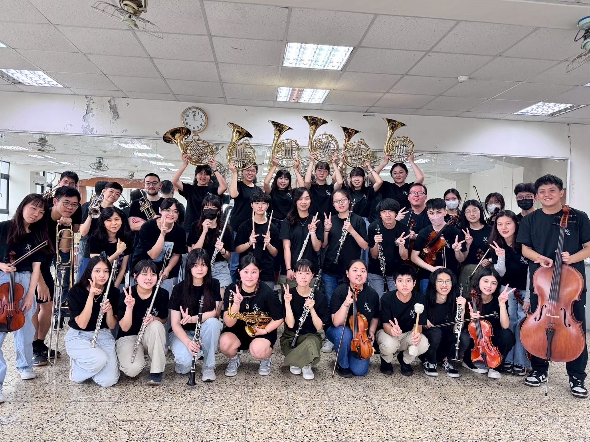

輔仁大學管弦樂社由一群熱愛音樂的學生組成，自民國 69 年成立至今，已有 45 年歷史。社團成立之初為大型管弦樂團，中期因經費、編制及台灣音樂生態的變化，分別改制為弦樂團與管樂團。近年來為創造更多元的演出，兩團並行經營，並以出眾的表現獲得觀眾肯定。
社團致力於音樂教育推廣，每學期舉辦音樂發表會，並受邀參與校內大型活動，帶動中小學學生認識管弦樂器，啟發偏遠地區孩子對音樂的興趣。我們期望透過樂聲，將音樂的理念灌溉每個人心中，傳遞至全校，甚至更廣的社會。